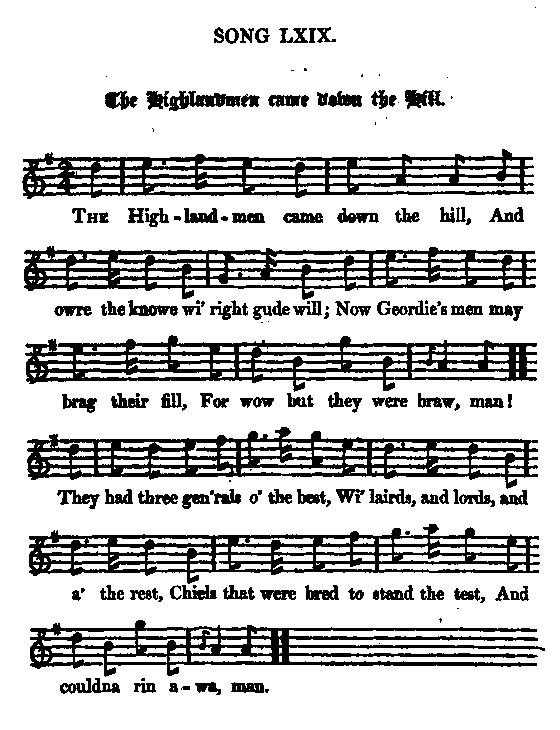

The Highlandmen Came Down The Hill
Les Montagnards quittant le mont
17th January 1746: Battle of Falkirk (2)
Text from James Hogg's "Jacobite Relics", volume 2, N°69, page 138, 1821Tune - Mélodie
A variant of "The Mullin Dhu" (or "The Oyster Wives' Rant")
from Hogg's "Jacobite Relics" 2nd Series N°69
Sequenced by Christian Souchon


|
THE HIGHLANDMEN CAME DOWN THE HILL
1. The Highlandmen came down the hill, And owre the knowe wi' right gude will; Now Geordie's(*) men may brag their fill, For wow but they were braw, man! They had three gen'rals o' the best, Wi' lairds, and lords, and a' the rest, Chiefs that were bred to stand the test, And couldna rin awa, man. 2. The Highlandmen are savage loons, Wi' barkit houghs and burly crowns; They canna stand the thunder-stoun's Of heroes bred wi' care, man- Of men that are their country's stay, These Whiggish braggarts of a day. The Highlandmen came down the brae, The heroes were not there, man. 3. Says brave Lochiel, "Pray, have we won? I see no troop, I hear no gun." Says Drummond, "Faith, the battle's done, I know not how or why, man. But my good lords, this thing I crave, Have we defeat these heroes brave?" Says Murray, "I believe we have: If not, we're here to try, man." 4. But tried they up, or tried they down, There was no foe in Falkirk town, Nor yet in a' the country roun', To break a sword at a', man. They were sae bauld at break o' day, When tow'rd the west they took their way; But the Highlandmen came down the brae, And made the dogs to blawe, man. 5. A tyke is but a tyke at best, A coward ne'er will stand the test, And Whigs at morn wha cocked the crest, Or e'en had got a fa', man. O wae befa' these northern lads, Wi' their braidswords and white cockades! They lend sic hard and heavy blads, Our Whigs nae mair can craw, man. (*) Geordie's men: King George II 's army made up of English (Lords) and Scottish (Lairds) officers and soldiers |
LES MONTAGNARDS QUITTANT LE MONT
1. Les montagnards, quittant le mont, Ont assailli le mamelon; L'armée de George(*) avec raison, Pouvait être arrogante: Trois généraux et des meilleurs, Des lords, des lairds parmi les leurs; Des chefs préparés aux malheurs. Jamais ils ne décampent! 2. Le montagnard est un sauvage, Tronc frêle à l'imposant feuillage; Quoi, il tiendrait tête à l'orage De ces héros insignes, De ces piliers de la nation, - Mais d'éphémères fanfarons? Les montagnards au pied du mont, Ne voient âme qui vive! 3. Lochiel dit, "Avons-nous gagné? Je ne vois canons, ni mousquets." Drummond, "L'affaire est terminée, Quelle étrange aventure! Vraiment, Lords, je vous le demande, Avons-nous défait cette bande" De héros?" Murray dit: "Il semble. Je veux qu'on s'en assure" 4. Ils ont beau descendre et monter, Point d'ennemi dans la cité! Ni nulle part dans la contrée, A quoi bon leurs rapières! Qu'ils étaient fiers au point du jour, De partir vers l'ouest à leur tour; Mais leur défilé ce fut pour, Les chiens qui aboyèrent. 5. On ne peut faire un loup d'un chien, Ni faire un héros d'un gredin, Et les Whigs si fiers le matin, Le soir ne crânaient guère. "Malheur aux brutes montagnardes, A leurs claymores, à leurs cocardes! Des coups qu'ils donnent, Dieu nous garde, Le mieux c'est de nous taire." (*) Les gens de George: l'armée du roi Georges II, composé d'officiers et de soldats tant anglais (Lords) qu'écossais (lairds). (Trad. Ch.Souchon (c) 2004) |
|
Hogg writes, "Hawley had vaunted that, with two troops of dragoons and no more, he would drive the Highlanders before him to the farthest corner of the country and into the sea, but behold, at the very first sight he got of them, a Jacobite storm sent him back with a jerk. The Highland men came boldly to the attack, but when their enemies wheeled and fled, they only took it for some sage manoeuvre, and expected to have the brunt of the battle to abide at the bottom of the descent. When they reached the camp, there was no enemy to be seen.
Unfortunately for the Jacobite forces, the clan chiefs were unable to rally their men to pursue this enemy, which justifies Lochiel's comment "pray, have we won?" '"To hide his own cowardice, General Hawley wreaked his vengeance manfully on others. A number of private men were shot for cowardly behaviour, and a far greater number severely whipped for flinging down their arms and running off as soon as the Highlanders came in sight. Hawley took an active part in the savage repression after Culloden." |
Hogg écrit: "Hawley s'était vanté de pouvoir, avec seulement deux détachements de dragons, repousser les Highlanders à l'autre bout du pays jusqu'à la mer, mais voilà, dès que les Jacobites apparurent, ce fut comme une tempête qui s'abattit sur lui. Les Highlanders passèrent courageusement à l'attaque, mais comme leurs ennemis prenaient la fuite, ils crurent à une manœuvre savante et s'attendaient à ce que la bataille reprenne de plus belle en bas de la colline. Quand ils atteignirent le camp, il n'y avait plus d'ennemi en vue.
Malheureusement pour les forces Jacobites, les chefs de clans se montrèrent incapables de rameuter leurs troupes pour poursuivre l'ennemi, ce qui justifie la remarque de Lochiel "Avons-nous gagné?" '"Pour cacher sa propre lâcheté, le Général Hawley assouvit sa vengeance courageusement sur les autres. Plusieurs simples soldats furent passés par les armes pour défection devant l'ennemi et un plus gand nombre encore furent fouettés pour avoir abandonné leurs armes et avoir pris la fuite dès que les Highlanders étaient apparus. Hawley prit une part active à la sauvage répression qui suivit Culloden" |